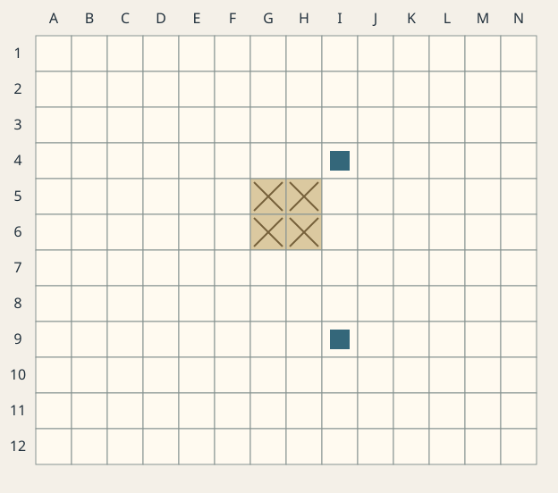

Одинаковые правила, разная история
Все карты совпадают с сеткой нативного пакета: 14 × 12, клетка — 5 футов. G5/H5/G6/H6 — трудная местность; I4/I9 — половинное укрытие. Остальные детали описания декоративны, пока ведущий не изменил поле штатно.
Расстановка и параметры
Начальные клетки героев: B3, B4, B5, B6, C3, C4, C5, C6; штатная подготовленная встреча назначает их присутствующим героям по именам. Противники: L3, L4, L5, L6, M3, M4. Используйте только нужное число фигур. Перед началом герои должны находиться в месте встречи.
Для 3 / 4 / 5 / 6 / 7 / 8 игроков: 2 / 3 / 3 / 4 / 5 / 6 противников, здоровье каждого 12 / 14 / 16 / 18 / 20 / 22. Защита 12; скорость 20 футов; одна ближняя атака +3, 1d4+1 дробящего урона, досягаемость 5 футов.
Враги — простая поддерживаемая модель. Мирные решения и ограничения сцены описаны отдельно; ведущий подтверждает их результат. После первого раунда напомните пути переговоров или отступления. Встречи не запускаются автоматически.
У ворот просят остаться
Только если герои после предупреждения пытаются вынести чужие вещи без согласия владельца либо продолжают физическое противостояние с нанятыми взрослыми сторожами; ведущий отдельно предлагает перейти к бою.
Цель и выходы
Сохранить личные вещи Павла и выйти во двор без тяжёлых травм. Победа не требует вывести всех противников из строя; отступление в столовую сохраняет обёртку и путь расследования.
Павел перечисляет собственные вещи при свидетелях, спорное оставляют под расписку; Раисе предлагают обсудить расчёт отдельно. Можно уйти без вещей и вернуться с согласованным хранителем. Сторожа принимают сдачу и сами отступают при потере смысла охраны.
Поведение противников
Совершеннолетний работник не моложе 21 года в обычном рабочем пальто; боится потерять заработок, не желает убивать.
Занимают проход и требуют положить спорные вещи. При ранении или предложении оставить имущество до проверки готовы остановиться. Используется только условный ближний удар: +3, 1d4+1; никакого огнестрельного оружия или специальных приёмов.
Размер группы
3 игрока: 2 противника, 12 HP; 4: 3 и 14; 5: 3 и 16; 6: 4 и 18; 7: 5 и 20; 8: 6 и 22. У всех AC 12, один +3 ближний удар на 1d4+1. На малом столе один герой разговаривает, двое сопровождают; на большом пары делят вещи, переговоры и выход, новые цели не добавляются.


Сетка 14×12, клетка — 5 футов. Трудная местность только в G5, H5, G6, H6 (четыре клетки): мокрые складные скамьи. Половинное укрытие в I4 и I9: ящики. Западные ворота и второй выход на востоке открыты. Проходы по краям свободны. Выходы и прочие детали задаёт ведущий в описании; на нативном поле дополнительных препятствий нет.
Забрать заказ немедленно
Лада узнала, что валик сохраняют как улику, и прислала взрослых работников забрать оплаченный заказ. Бой возможен лишь после отказа от разговора и явного физического столкновения; прибытие работников само по себе его не запускает.
Цель и выходы
Сохранить описание и доступ к спорному предмету, не превращая мастерскую в ловушку. Даже утрата валика не уничтожает пальто, свидетельство и подставной текст; можно отступить через переднюю дверь.
Бек оставляет заказ на месте до совместной описи или выдаёт его после сохранения рисунка и отделившейся детали. Работники согласны вызвать заказчицу, уйти с распиской либо сдаться; задача не требует наказания людей, выполняющих обычное поручение.
Поведение противников
Наёмный работник не моложе 21 года с биркой кабинета; знает только поручение забрать инструмент, а не тайну убийства.
Пытаются удержать переносной ящик и оттеснить спорящих. Не преследуют ушедших и прекращают действия при соглашении об описи. Только стандартный условный ближний удар +3 на 1d4+1; инструменты не получают особых правил.
Размер группы
Для 3/4/5/6/7/8 игроков соответственно 2/3/3/4/5/6 противников с 12/14/16/18/20/22 HP; AC 12, один +3 ближний удар на 1d4+1. Трое делят разговор, предмет и выход; дополнительные игроки помогают сохранить разные части описи, не создавая обязательных дополнительных проверок.

Сетка 14×12, клетка — 5 футов. Трудная местность только в G5, H5, G6, H6 (четыре клетки): верстаки и коробки. Половинное укрытие в I4 и I9: шкафы. Передняя дверь на юге, хозяйственная — на севере; обе доступны. Окно наблюдения не является обязательным путём бегства. Выходы и прочие детали задаёт ведущий в описании; на нативном поле дополнительных препятствий нет.
Чужая рука на чемодане
Только если Лада приглашена или узнала место из сыгранного сообщения, требует оригиналы и после отказа её взрослые сопровождающие начинают физически удерживать вещи. При скрытом от неё месте либо добровольном прекращении спора столкновения нет.
Цель и выходы
Дать согласившимся взрослым уйти и сохранить хотя бы одну копию цепочки. Не требуется задерживать Ладу своими силами. Отход к остановке с человеком или материалами является полноценным завершением задачи.
Разделить выдачу личных вещей и передачу материалов, предложить опись при независимом получателе либо отменить встречу. Сопровождающие принимают отказ от вещи, отступают и принимают сдачу; документы можно передать позже другим каналом.
Поведение противников
Человек не моложе 21 года, нанятый сопровождать хозяйственные вещи; не посвящён в убийство и способен отказаться от поручения.
Держатся около спорного багажа, не атакуют ушедших и не перекрывают оба выхода. Если им показывают собственность других взрослых или Лада уходит, прекращают давление. Используют только +3 ближний удар, 1d4+1; намерение несмертельное.
Размер группы
3 игрока: 2 противника по 12 HP; 4: 3 по 14; 5: 3 по 16; 6: 4 по 18; 7: 5 по 20; 8: 6 по 22. AC 12; один +3 ближний удар на 1d4+1. У трёх выход и документы решаются последовательно; при шести–восьми работают пары с общим решением об отходе.

Сетка 14×12, клетка — 5 футов. Трудная местность только в G5, H5, G6, H6 (четыре клетки): мокрые скамейки. Половинное укрытие в I4 и I9: каменные тумбы. Открытые выходы ведут на запад к остановке и на восток к набережной. Река вне карты; обязательного падения в воду нет. Выходы и прочие детали задаёт ведущий в описании; на нативном поле дополнительных препятствий нет.